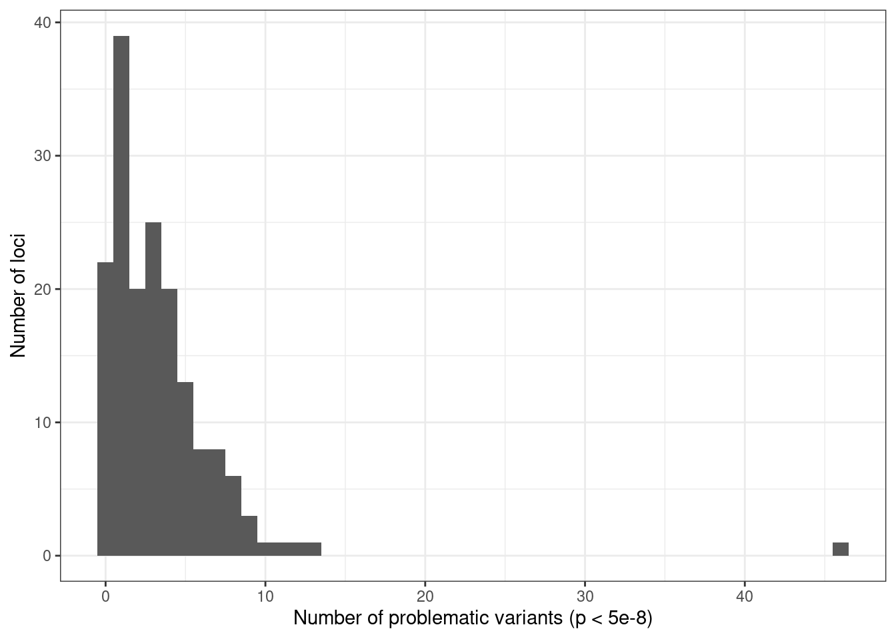
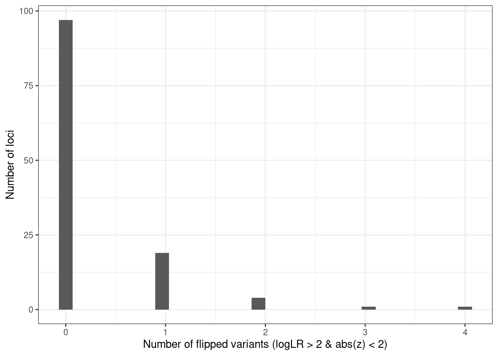
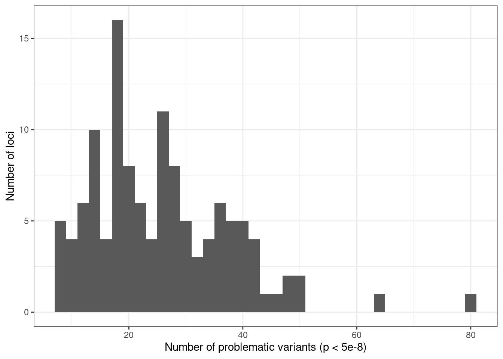
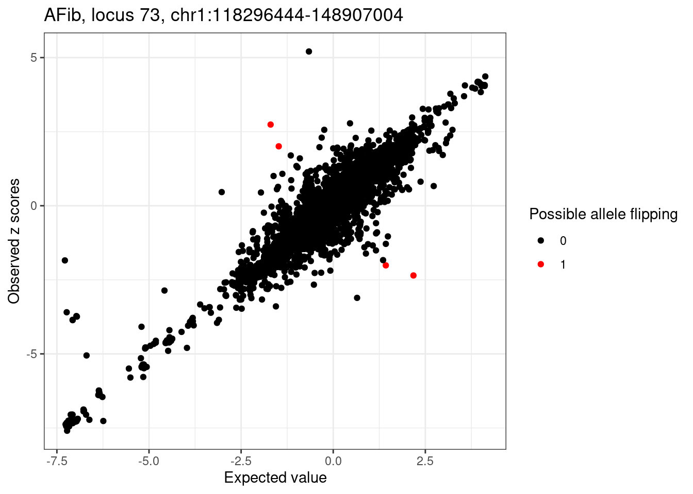
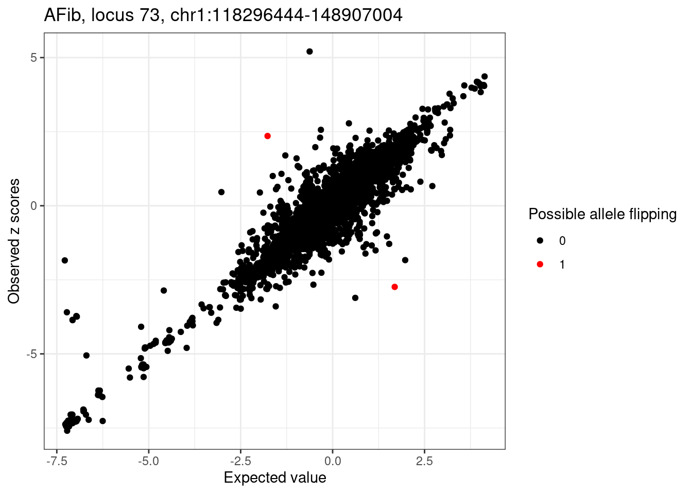
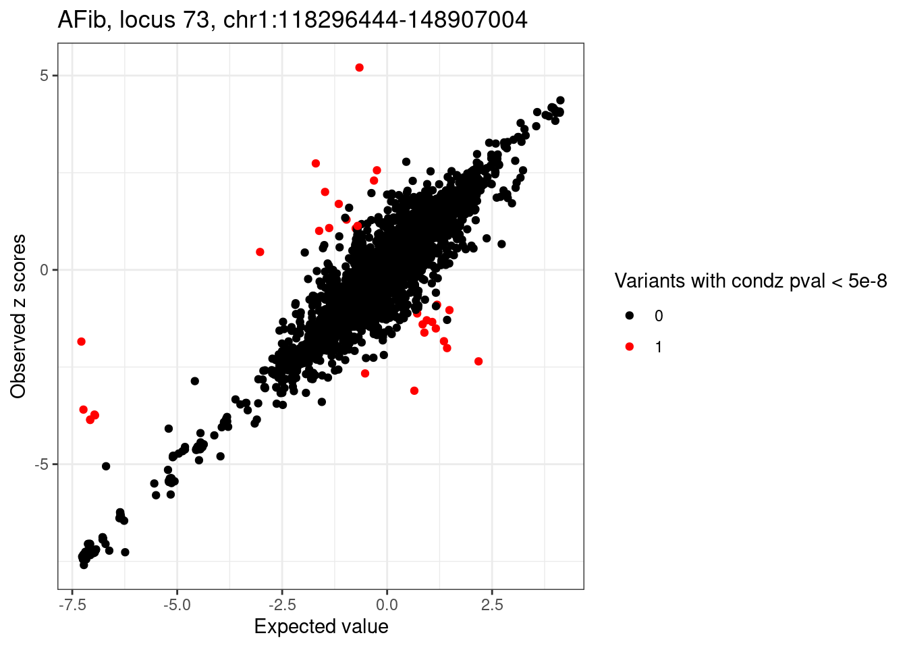

Detect mismatch between GWAS zscores and LD reference using SuSiE RSS
Kaixuan Luo
2023-11-08
Last updated: 2023-11-14
Checks: 7 0
Knit directory: multigroup_ctwas_analysis/
This reproducible R Markdown analysis was created with workflowr (version 1.7.0). The Checks tab describes the reproducibility checks that were applied when the results were created. The Past versions tab lists the development history.
Great! Since the R Markdown file has been committed to the Git repository, you know the exact version of the code that produced these results.
Great job! The global environment was empty. Objects defined in the global environment can affect the analysis in your R Markdown file in unknown ways. For reproduciblity it’s best to always run the code in an empty environment.
The command set.seed(20231112) was run prior to running the code in the R Markdown file. Setting a seed ensures that any results that rely on randomness, e.g. subsampling or permutations, are reproducible.
Great job! Recording the operating system, R version, and package versions is critical for reproducibility.
Nice! There were no cached chunks for this analysis, so you can be confident that you successfully produced the results during this run.
Great job! Using relative paths to the files within your workflowr project makes it easier to run your code on other machines.
Great! You are using Git for version control. Tracking code development and connecting the code version to the results is critical for reproducibility.
The results in this page were generated with repository version df9cc88. See the Past versions tab to see a history of the changes made to the R Markdown and HTML files.
Note that you need to be careful to ensure that all relevant files for the analysis have been committed to Git prior to generating the results (you can use wflow_publish or wflow_git_commit). workflowr only checks the R Markdown file, but you know if there are other scripts or data files that it depends on. Below is the status of the Git repository when the results were generated:
Ignored files:
Ignored: .Rproj.user/
Unstaged changes:
Modified: analysis/index.Rmd
Note that any generated files, e.g. HTML, png, CSS, etc., are not included in this status report because it is ok for generated content to have uncommitted changes.
These are the previous versions of the repository in which changes were made to the R Markdown (analysis/detect_LD_mismatch_gwas_UKBBref_susie_rss.Rmd) and HTML (docs/detect_LD_mismatch_gwas_UKBBref_susie_rss.html) files. If you’ve configured a remote Git repository (see ?wflow_git_remote), click on the hyperlinks in the table below to view the files as they were in that past version.
| File | Version | Author | Date | Message |
|---|---|---|---|---|
| Rmd | df9cc88 | kevinlkx | 2023-11-14 | wflow_rename(“analysis/detect_LD_mismatch_gwas_UKBBref.Rmd”, |
| html | df9cc88 | kevinlkx | 2023-11-14 | wflow_rename(“analysis/detect_LD_mismatch_gwas_UKBBref.Rmd”, |
Load packages and functions
library(ctwas)
library(susieR)
library(tidyverse)
library(GenomicRanges)
library(rtracklayer)# Load UKBB reference LD matrix and SNP info
load_UKBB_R_snp_info <- function(region_df, ld_R_dir, filestem = "ukb_b38_0.1"){
filename <- sprintf("%s_chr%s.R_snp.%d_%d", filestem,
gsub("chr", "", region_df$chr), region_df$start, region_df$stop)
print(filename)
if(!file.exists(file.path(ld_R_dir, paste0(filename, ".RDS"))) || !file.exists(file.path(ld_R_dir, paste0(filename, ".Rvar")))){
stop("LD Reference files not exist!")
}
R_snp <- readRDS(file.path(ld_R_dir, paste0(filename, ".RDS")))
R_snp_info <- read.table(file.path(ld_R_dir, paste0(filename, ".Rvar")), header=TRUE)
return(list(R_snp = R_snp, R_snp_info = R_snp_info))
}
# Match GWAS sumstats with LD reference files. Only keep variants included in LD reference.
match_gwas_R_snp <- function(sumstats, R, snp_info){
sumstats <- sumstats[sumstats$id %in% snp_info$id,]
R_snp_index <- na.omit(match(sumstats$id, snp_info$id))
sumstats$R_snp_index <- R_snp_index
R <- R[R_snp_index, R_snp_index]
stopifnot(nrow(sumstats) == nrow(R))
return(list(sumstats = sumstats, R = R))
}
liftOver_hg19ToHg38 <- function(gr){
seqlevelsStyle(gr) <- "UCSC"
ch <- import.chain("~/softwares/liftOver/hg19ToHg38.over.chain")
gr <- unlist(liftOver(gr, ch))
genome(gr) <- "hg38"
return(gr)
}Load LD Regions (ldetect blocks)
regions <- system.file("extdata/ldetect", "EUR.b38.bed", package = "ctwas")
regions_df <- read.table(regions, header = T)
regions_df <- regions_df %>% dplyr::arrange(chr, start, stop) %>% dplyr::mutate(locus = 1:nrow(regions_df))LDL
trait <- "LDL"
set.seed(123)
outdir <- paste0("/project2/xinhe/kevinluo/cTWAS/multigroup/ld_mismatch_filtering/", trait)
if(!dir.exists(outdir)) dir.create(outdir)GWAS data
# read the data
sumstats <- VariantAnnotation::readVcf("/project2/xinhe/shared_data/multigroup_ctwas/gwas/ukb-d-30780_irnt.vcf.gz")
sumstats <- gwasvcf::vcf_to_tibble(sumstats)
# compute the z-scores
sumstats$Z <- sumstats$ES/sumstats$SE
# drop multiallelic variants (id not unique)
sumstats <- sumstats[!(sumstats$rsid %in% sumstats$rsid[duplicated(sumstats$rsid)]),]
keep_columns <- c("seqnames", "start", "rsid", "REF", "ALT", "ES", "SE", "Z", "LP")
sumstats <- sumstats[,keep_columns] %>%
dplyr::rename(chr = seqnames, pos = start, id = rsid, A1 = ALT, A2 = REF, z = Z, pval = LP)
saveRDS(sumstats, file="/project2/xinhe/shared_data/multigroup_ctwas/gwas/gwas_processed/LDL-ukb-d-30780_irnt.sumstats.RDS")
# subset the columns and format the column names
z_snp <- as.data.frame(sumstats[,c("id", "A1", "A2", "z")])
# save the formatted z-scores
saveRDS(z_snp, file="/project2/xinhe/shared_data/multigroup_ctwas/gwas/gwas_processed/LDL-ukb-d-30780_irnt.z_snp.RDS")sumstats_file <- "/project2/xinhe/shared_data/multigroup_ctwas/gwas/gwas_processed/LDL-ukb-d-30780_irnt.sumstats.RDS"
print(sumstats_file)
sumstats <- readRDS(sumstats_file)
z_snp <- as.data.frame(sumstats[,c("id", "A1", "A2", "z")])
gwas_n <- 343621Assign GWAS SNPs to LD Regions
sumstats <- makeGRangesFromDataFrame(sumstats, start.field = "pos", end.field = "pos", keep.extra.columns = T)
sumstats_hg38 <- liftOver_hg19ToHg38(sumstats) %>% as.data.frame() %>%
dplyr::rename(chr = seqnames, pos = start, snp = id) %>%
dplyr::select(chr, pos, snp, A1, A2, z, pval)
sumstats_hg38 <- mapgen::assign_snp_locus(sumstats_hg38, regions_df)Select locus
sig.loci <- sumstats_hg38 %>% dplyr::filter(pval > -log10(5e-8)) %>%
dplyr::arrange(-pval) %>%
dplyr::pull(locus) %>% unique()
saveRDS(sig.loci, file.path(outdir, paste0(trait, ".sig.loci.rds")))
rm(sumstats)
rm(sumstats_hg38)LD mismatch diagnosis
sig.loci <- readRDS(file.path(outdir, paste0(trait, ".sig.loci.rds")))
cat(length(sig.loci), "significant loci.\n")
n.loci <- length(sig.loci)
condz_table <- readRDS(file.path(outdir, paste0(trait, ".lambda.condz.", n.loci, "loci.rds")))
condz_table <- condz_table %>% dplyr::rename(flip_snps = problematic_snps)
condz_table$n_flip_snps <- 0
condz_table$n_pval_snps <- 0
condz_dist_all <- readRDS(file.path(outdir, paste0(trait, ".condz.dist.", n.loci, "loci.rds")))
for(locus in condz_table$locus){
condz_dist <- condz_dist_all[[as.character(locus)]]
condz_dist$pval_diff <- pchisq(condz_dist$z_std_diff^2, df = 1, lower.tail=FALSE)
detected_flip_index <- which(condz_dist$logLR > 2 & abs(condz_dist$z) > 2)
detected_pval_diff_index <- which(condz_dist$pval_diff < 5e-8)
condz_table[condz_table$locus == locus, ]$n_flip_snps <- length(detected_flip_index)
condz_table[condz_table$locus == locus, ]$n_pval_snps <- length(detected_pval_diff_index)
}
sprintf("%d out of %d (%.2f %%) loci with problematic variants", length(which(condz_table$n_pval_snps > 0)), nrow(condz_table),
length(which(condz_table$n_pval_snps > 0))/nrow(condz_table)*100)
sprintf("%d out of %d (%.2f %%) loci with flipped variants", length(which(condz_table$flip_snps != "")), nrow(condz_table),
length(which(condz_table$flip_snps != ""))/nrow(condz_table)*100)
ggplot(condz_table, aes(x = n_flip_snps)) +
geom_histogram(bins = 30) +
labs(x = "Number of flipped variants (logLR > 2 & abs(z) < 2)", y = "Number of loci") +
theme_bw()
| Version | Author | Date |
|---|---|---|
| df9cc88 | kevinlkx | 2023-11-14 |
ggplot(condz_table, aes(x = n_pval_snps)) +
geom_histogram(binwidth = 1) +
labs(x = "Number of problematic variants (p < 5e-8)", y = "Number of loci") +
theme_bw()
| Version | Author | Date |
|---|---|---|
| df9cc88 | kevinlkx | 2023-11-14 |
condz_table %>% dplyr::mutate(lambda = round(lambda, 4)) %>%
dplyr::select(locus, lambda, n_flip_snps, n_pval_snps) %>%
DT::datatable(options = list(order = list(list(3, 'desc'), list(4, 'desc'))))
# 169 significant loci.
# [1] "147 out of 169 (86.98 %) loci with problematic variants"
# [1] "2 out of 169 (1.18 %) loci with flipped variants"AFib
trait <- "AFib"
outdir <- "/project2/xinhe/kevinluo/cTWAS/multigroup/ld_mismatch_filtering/AFib"
if(!dir.exists(outdir)) dir.create(outdir)GWAS data
# read the data
sumstats <- VariantAnnotation::readVcf("/project2/xinhe/shared_data/multigroup_ctwas/gwas/ebi-a-GCST006414.vcf.gz")
sumstats <- gwasvcf::vcf_to_tibble(sumstats)
# compute the z-scores
sumstats$Z <- sumstats$ES/sumstats$SE
# drop multiallelic variants (id not unique)
sumstats <- sumstats[!(sumstats$rsid %in% sumstats$rsid[duplicated(sumstats$rsid)]),]
keep_columns <- c("seqnames", "start", "rsid", "REF", "ALT", "ES", "SE", "Z", "LP")
sumstats <- sumstats[,keep_columns] %>%
dplyr::rename(chr = seqnames, pos = start, id = rsid, A1 = ALT, A2 = REF, z = Z, pval = LP)
saveRDS(sumstats, file="/project2/xinhe/shared_data/multigroup_ctwas/gwas/gwas_processed/AFib-ebi-a-GCST006414.sumstats.RDS")
# subset the columns and format the column names
z_snp <- as.data.frame(sumstats[,c("id", "A1", "A2", "z")])
# save the formatted z-scores
saveRDS(z_snp, file="/project2/xinhe/shared_data/multigroup_ctwas/gwas/gwas_processed/AFib-ebi-a-GCST006414.z_snp.RDS")sumstats_file <- "/project2/xinhe/shared_data/multigroup_ctwas/gwas/gwas_processed/AFib-ebi-a-GCST006414.sumstats.RDS"
print(sumstats_file)
sumstats <- readRDS(sumstats_file)
z_snp <- as.data.frame(sumstats[,c("id", "A1", "A2", "z")])
gwas_n <- 1030836
# [1] "/project2/xinhe/shared_data/multigroup_ctwas/gwas/gwas_processed/AFib-ebi-a-GCST006414.sumstats.RDS"Assign GWAS SNPs to LD Regions
sumstats <- makeGRangesFromDataFrame(sumstats, start.field = "pos", end.field = "pos", keep.extra.columns = T)
sumstats_hg38 <- liftOver_hg19ToHg38(sumstats) %>% as.data.frame() %>%
dplyr::rename(chr = seqnames, pos = start, snp = id) %>%
dplyr::select(chr, pos, snp, A1, A2, z, pval)
sumstats_hg38 <- mapgen::assign_snp_locus(sumstats_hg38, regions_df)Select locus
sig.loci <- sumstats_hg38 %>% dplyr::filter(pval > -log10(5e-8)) %>%
dplyr::arrange(-pval) %>%
dplyr::pull(locus) %>% unique()
saveRDS(sig.loci, file.path(outdir, paste0(trait, ".sig.loci.rds")))
rm(sumstats)
rm(sumstats_hg38)LD mismatch diagnosis
sig.loci <- readRDS(file.path(outdir, paste0(trait, ".sig.loci.rds")))
cat(length(sig.loci), "significant loci.\n")
n.loci <- length(sig.loci)
condz_table <- readRDS(file.path(outdir, paste0(trait, ".lambda.condz.", n.loci, "loci.rds")))
condz_table <- condz_table %>% dplyr::rename(flip_snps = problematic_snps)
condz_table$n_flip_snps <- 0
condz_table$n_pval_snps <- 0
condz_dist_all <- readRDS(file.path(outdir, paste0(trait, ".condz.dist.", n.loci, "loci.rds")))
for(locus in condz_table$locus){
condz_dist <- condz_dist_all[[as.character(locus)]]
condz_dist$pval_diff <- pchisq(condz_dist$z_std_diff^2, df = 1, lower.tail=FALSE)
detected_flip_index <- which(condz_dist$logLR > 2 & abs(condz_dist$z) > 2)
detected_pval_diff_index <- which(condz_dist$pval_diff < 5e-8)
condz_table[condz_table$locus == locus, ]$n_flip_snps <- length(detected_flip_index)
condz_table[condz_table$locus == locus, ]$n_pval_snps <- length(detected_pval_diff_index)
}
sprintf("%d out of %d (%.2f %%) loci with problematic variants", length(which(condz_table$n_pval_snps > 0)), nrow(condz_table),
length(which(condz_table$n_pval_snps > 0))/nrow(condz_table)*100)
sprintf("%d out of %d (%.2f %%) loci with flipped variants", length(which(condz_table$flip_snps != "")), nrow(condz_table),
length(which(condz_table$flip_snps != ""))/nrow(condz_table)*100)
ggplot(condz_table, aes(x = n_flip_snps)) +
geom_histogram(bins = 30) +
labs(x = "Number of flipped variants (logLR > 2 & abs(z) < 2)", y = "Number of loci") +
theme_bw()
| Version | Author | Date |
|---|---|---|
| df9cc88 | kevinlkx | 2023-11-14 |
ggplot(condz_table, aes(x = n_pval_snps)) +
geom_histogram(binwidth = 2) +
labs(x = "Number of problematic variants (p < 5e-8)", y = "Number of loci") +
theme_bw()
| Version | Author | Date |
|---|---|---|
| df9cc88 | kevinlkx | 2023-11-14 |
condz_table %>% dplyr::mutate(lambda = round(lambda, 4)) %>%
dplyr::select(locus, lambda, n_flip_snps, n_pval_snps) %>%
DT::datatable(options = list(order = list(list(3, 'desc'), list(4, 'desc'))))
# 122 significant loci.
# [1] "122 out of 122 (100.00 %) loci with problematic variants"
# [1] "25 out of 122 (20.49 %) loci with flipped variants"Plot example locus with problematic variants
condz_dist_all <- readRDS(file.path(outdir, paste0(trait, ".condz.dist.", n.loci, "loci.rds")))
check_loci <- condz_table$locus[which(condz_table$problematic_snps_after_flipping != "")]
condz_table[condz_table$locus %in% check_loci, ]
locus <- check_loci[1]
region_df <- regions_df[regions_df$locus == locus,]
condz_dist <- condz_dist_all[[as.character(locus)]]
detected_flip_index <- which(condz_dist$logLR > 2 & abs(condz_dist$z) > 2)
condz_dist$allele_flipping <- 0
condz_dist$allele_flipping[detected_flip_index] <- 1
if(length(detected_flip_index) > 0){
cat(sprintf("Detected %d variants with possible allele flipping: \n", length(detected_flip_index)))
# print(condz_dist[condz_dist$allele_flipping == 1,])
}
ggplot(condz_dist, aes(x = condmean, y = z, col = factor(allele_flipping))) +
geom_point() +
scale_colour_manual(values = c("0" = "black", "1" = "red")) +
labs(x = "Expected value", y = "Observed z scores", color = "Possible allele flipping") +
ggtitle(sprintf("%s, locus %s, %s:%d-%d", trait, locus, region_df$chr, region_df$start, region_df$stop)) +
theme_bw()
| Version | Author | Date |
|---|---|---|
| df9cc88 | kevinlkx | 2023-11-14 |
# flip alleles
cat("Rerun after flipping alleles...\n")
condz_flip <- readRDS(file.path(outdir, paste0(trait, ".locus", locus, ".condz.conditional_dist.flipped.rds")))
detected_flip_index <- which(condz_flip$logLR > 2 & abs(condz_flip$z) > 2)
condz_flip$allele_flipping <- 0
condz_flip$allele_flipping[detected_flip_index] <- 1
ggplot(condz_flip, aes(x = condmean, y = z, col = factor(allele_flipping))) +
geom_point() +
scale_colour_manual(values = c("0" = "black", "1" = "red")) +
labs(x = "Expected value", y = "Observed z scores", color = "Possible allele flipping") +
ggtitle(sprintf("%s, locus %s, %s:%d-%d", trait, locus, region_df$chr, region_df$start, region_df$stop)) +
theme_bw()
| Version | Author | Date |
|---|---|---|
| df9cc88 | kevinlkx | 2023-11-14 |
# compute p-values
condz_dist$pval <- pchisq(condz_dist$z_std_diff^2, df = 1, lower.tail=FALSE)
detected_pval_diff_index <- which(condz_dist$pval < 5e-8)
condz_dist$pval_diff <- 0
condz_dist$pval_diff[detected_pval_diff_index] <- 1
if(length(detected_pval_diff_index) > 0){
cat(sprintf("%d problematic variants based on pval: \n", length(detected_pval_diff_index)))
# print(condz_dist[condz_dist$pval_diff == 1,])
}
ggplot(condz_dist, aes(x = condmean, y = z, col = factor(pval_diff))) +
geom_point() +
scale_colour_manual(values = c("0" = "black", "1" = "red")) +
labs(x = "Expected value", y = "Observed z scores", color = "Variants with condz pval < 5e-8") +
ggtitle(sprintf("%s, locus %s, %s:%d-%d", trait, locus, region_df$chr, region_df$start, region_df$stop)) +
theme_bw()
| Version | Author | Date |
|---|---|---|
| df9cc88 | kevinlkx | 2023-11-14 |
# check zscores and LD for problematic variants
cat("check zscores and LD for problematic variants...\n")
ldref_res <- load_UKBB_R_snp_info(region_df, "/project2/mstephens/wcrouse/UKB_LDR_0.1", "ukb_b38_0.1")
matched.sumstat.LD <- match_gwas_R_snp(z_snp, ldref_res$R_snp, ldref_res$R_snp_info)
sumstats.locus <- matched.sumstat.LD$sumstats
R.locus <- matched.sumstat.LD$R
rm(matched.sumstat.LD)
sumstats.locus[detected_flip_index, ]
condz_dist <- cbind(id = sumstats.locus$id, condz_dist)
R_tmp <- R.locus[detected_flip_index, detected_flip_index]
colnames(R_tmp) <- rownames(R_tmp) <- sumstats.locus$id[detected_flip_index]
print(R_tmp)
condz_dist[detected_flip_index, ]
# locus lambda flip_snps
# 48 73 0.105559 rs7536827,rs146930144,rs138990014,rs148539878
# lambda_after_flipping problematic_snps_after_flipping n_flip_snps
# 48 0.1031303 rs146930144,rs138990014 4
# n_pval_snps
# 48 31
# Detected 4 variants with possible allele flipping:
# Rerun after flipping alleles...
# 31 problematic variants based on pval:
# check zscores and LD for problematic variants...
# [1] "ukb_b38_0.1_chr1.R_snp.118296444_148907004"
# id A1 A2 z R_snp_index
# 1367236 rs146930144 A G 2.739550 6101
# 1367336 rs138990014 C G -2.353612 6086
# rs146930144 rs138990014
# rs146930144 1.0000000 0.9748118
# rs138990014 0.9748118 1.0000000
# id z condmean condvar z_std_diff logLR
# 5136 rs146930144 2.739541 -1.699637 0.2152640 9.567906 4.966918
# 5149 rs138990014 -2.353607 2.177581 0.2137971 -9.799663 8.324928
# allele_flipping pval pval_diff
# 5136 1 1.090928e-21 1
# 5149 1 1.129619e-22 1
sessionInfo()
# R version 4.2.0 (2022-04-22)
# Platform: x86_64-pc-linux-gnu (64-bit)
# Running under: CentOS Linux 7 (Core)
#
# Matrix products: default
# BLAS/LAPACK: /software/openblas-0.3.13-el7-x86_64/lib/libopenblas_haswellp-r0.3.13.so
#
# locale:
# [1] LC_CTYPE=en_US.UTF-8 LC_NUMERIC=C
# [3] LC_TIME=en_US.UTF-8 LC_COLLATE=en_US.UTF-8
# [5] LC_MONETARY=en_US.UTF-8 LC_MESSAGES=en_US.UTF-8
# [7] LC_PAPER=en_US.UTF-8 LC_NAME=C
# [9] LC_ADDRESS=C LC_TELEPHONE=C
# [11] LC_MEASUREMENT=en_US.UTF-8 LC_IDENTIFICATION=C
#
# attached base packages:
# [1] stats4 stats graphics grDevices utils datasets methods
# [8] base
#
# other attached packages:
# [1] rtracklayer_1.58.0 GenomicRanges_1.48.0 GenomeInfoDb_1.34.9
# [4] IRanges_2.32.0 S4Vectors_0.36.1 BiocGenerics_0.44.0
# [7] forcats_1.0.0 stringr_1.5.0 dplyr_1.1.0
# [10] purrr_1.0.1 readr_2.1.4 tidyr_1.3.0
# [13] tibble_3.1.8 ggplot2_3.4.1 tidyverse_1.3.2
# [16] susieR_0.12.27 ctwas_0.1.35 workflowr_1.7.0
#
# loaded via a namespace (and not attached):
# [1] googledrive_2.0.0 colorspace_2.1-0
# [3] rjson_0.2.21 ellipsis_0.3.2
# [5] rprojroot_2.0.3 XVector_0.38.0
# [7] fs_1.6.1 rstudioapi_0.14
# [9] farver_2.1.1 DT_0.22
# [11] fansi_1.0.4 lubridate_1.9.2
# [13] xml2_1.3.3 codetools_0.2-18
# [15] logging_0.10-108 cachem_1.0.6
# [17] knitr_1.42 jsonlite_1.8.4
# [19] Rsamtools_2.12.0 broom_1.0.3
# [21] dbplyr_2.3.0 compiler_4.2.0
# [23] httr_1.4.4 backports_1.4.1
# [25] assertthat_0.2.1 Matrix_1.5-3
# [27] fastmap_1.1.0 gargle_1.3.0
# [29] cli_3.6.0 later_1.3.0
# [31] htmltools_0.5.4 tools_4.2.0
# [33] gtable_0.3.1 glue_1.6.2
# [35] GenomeInfoDbData_1.2.9 Rcpp_1.0.10
# [37] Biobase_2.58.0 cellranger_1.1.0
# [39] jquerylib_0.1.4 vctrs_0.5.2
# [41] Biostrings_2.66.0 crosstalk_1.2.0
# [43] iterators_1.0.14 xfun_0.37
# [45] ps_1.7.2 rvest_1.0.3
# [47] timechange_0.2.0 lifecycle_1.0.3
# [49] irlba_2.3.5 restfulr_0.0.15
# [51] XML_3.99-0.13 googlesheets4_1.0.1
# [53] getPass_0.2-2 zlibbioc_1.44.0
# [55] scales_1.2.1 MatrixGenerics_1.10.0
# [57] hms_1.1.2 promises_1.2.0.1
# [59] parallel_4.2.0 SummarizedExperiment_1.28.0
# [61] yaml_2.3.7 sass_0.4.5
# [63] reshape_0.8.9 stringi_1.7.12
# [65] highr_0.10 BiocIO_1.8.0
# [67] foreach_1.5.2 BiocParallel_1.32.5
# [69] rlang_1.0.6 pkgconfig_2.0.3
# [71] matrixStats_0.63.0 bitops_1.0-7
# [73] evaluate_0.20 lattice_0.20-45
# [75] htmlwidgets_1.6.1 labeling_0.4.2
# [77] GenomicAlignments_1.34.0 processx_3.8.0
# [79] tidyselect_1.2.0 plyr_1.8.7
# [81] magrittr_2.0.3 R6_2.5.1
# [83] generics_0.1.3 DelayedArray_0.24.0
# [85] DBI_1.1.3 pgenlibr_0.3.3
# [87] pillar_1.8.1 haven_2.5.1
# [89] whisker_0.4 withr_2.5.0
# [91] RCurl_1.98-1.10 mixsqp_0.3-43
# [93] modelr_0.1.10 crayon_1.5.2
# [95] utf8_1.2.3 tzdb_0.3.0
# [97] rmarkdown_2.20 grid_4.2.0
# [99] readxl_1.4.2 callr_3.7.3
# [101] git2r_0.30.1 reprex_2.0.2
# [103] digest_0.6.31 httpuv_1.6.5
# [105] munsell_0.5.0 bslib_0.4.2